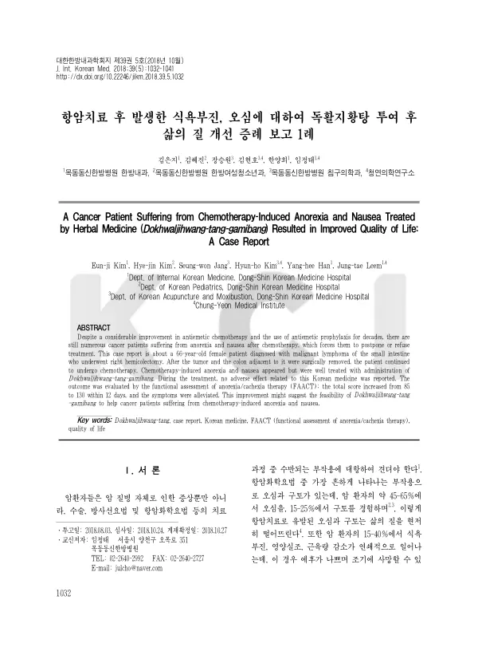

A Cancer Patient Suffering from Chemotherapy-Induced Anorexia and Nausea Treated by Herbal Medicine (Dokhwaljihwang-tang-gamibang) Resulted in Improved Quality of Life: A Case Report
Kim Ej, Kim Hj, Jang Sw, Kim Hh, Han Yh, Leem Jt
The Journal of Internal Korean Medicine 39(5):1032-1041

첫 장 · 오픈액세스First page · open access
논문 소개Summary
항암화학요법을 받는 환자의 약 45~65%가 오심을, 15~25%가 구토를 겪습니다. 15~40%에서는 식욕부진과 영양실조, 근육량 감소가 잇달아 일어나는데 이 경우 예후가 나쁘고 일찍 사망할 수 있습니다. 그런데 이에 대한 치료에는 한계가 있습니다. 5HT3 수용체 길항제는 투여 경로가 제한적이고 심혈관질환과 소화기 장애 같은 부작용이 있으며 급성기에만 유효합니다. 식욕촉진제는 부신 기능을 억제할 수 있습니다. 그래서 어떤 환자들은 다른 방법을 찾습니다.
66세 여성이 소장 악성림프종으로 우측 대장절제술을 받았습니다. 말단 회장에 있던 11×6.5×2.1 센티미터 크기의 종양이 점막에서 장막과 림프절까지 침범한 상태였고, 종양을 포함해 상행결장과 맹장, 말단 회장, 충수를 절제한 뒤 항암화학요법을 시작했습니다. 3주 간격으로 3회차까지 받은 상태에서 식욕부진과 오심을 호소해 내원했습니다. 독활지황탕가미방을 투여했습니다.
식욕부진·악액질 치료 기능평가(FAACT) 총점이 12일 만에 85점에서 130점으로 올랐고 증상이 완화되었습니다. 치료 기간 동안 한약과 관련된 이상반응은 보고되지 않았습니다.
항암 후유증에 대한 한약 치료로는 육군자탕과 십전대보탕이 보고되어 있었으나 독활지황탕에 대한 보고는 그때까지 없었습니다.
한계는 증례 하나이고 관찰 기간이 12일로 짧다는 점입니다. 항암제 투여 뒤 시간이 지나면서 오심과 식욕부진이 자연히 가라앉는 경과와 겹쳐 있으므로, 이 변화를 한약의 몫으로만 읽을 수는 없습니다. 그럼에도 항암치료를 미루거나 거부하게 만드는 증상에 쓸 수 있는 선택지를 하나 기록해 두었다는 점은 남습니다.
Around 45 to 65% of patients receiving chemotherapy experience nausea and 15 to 25% vomiting. In 15 to 40%, anorexia, malnutrition and loss of muscle mass follow in sequence, carrying a poor prognosis and the risk of early death. Treatment has its limits. 5-HT3 receptor antagonists have restricted routes of administration, adverse effects including cardiovascular and gastrointestinal disturbance, and efficacy confined to the acute phase. Appetite stimulants can suppress adrenal function. Some patients therefore look elsewhere.
A 66-year-old woman underwent right hemicolectomy for malignant lymphoma of the small intestine. A tumour of 11 × 6.5 × 2.1 cm in the terminal ileum had invaded from mucosa through serosa to the lymph nodes; the ascending colon, caecum, terminal ileum and appendix were resected along with it, and chemotherapy followed. She presented with anorexia and nausea after three cycles at three-week intervals, and modified Dokhwaljihwang-tang was administered.
The total score on the Functional Assessment of Anorexia/Cachexia Therapy rose from 85 to 130 within 12 days and the symptoms eased. No adverse effects related to the herbal medicine were reported during treatment.
Yukgunja-tang and Sipjeondaebo-tang had been reported for chemotherapy sequelae; Dokhwaljihwang-tang had not.
The limitations are a single case and a short 12-day observation. Nausea and anorexia also subside on their own as time passes after a chemotherapy cycle, so the change cannot be attributed to the herbal medicine alone. What remains is a recorded option for symptoms that lead patients to postpone or refuse treatment.
인용Cite
Kim Ej, Kim Hj, Jang Sw, Kim Hh, Han Yh, Leem Jt. A Cancer Patient Suffering from Chemotherapy-Induced Anorexia and Nausea Treated by Herbal Medicine (Dokhwaljihwang-tang-gamibang) Resulted in Improved Quality of Life: A Case Report. The Journal of Internal Korean Medicine. 2018;39(5):1032-1041. doi:10.22246/jikm.2018.39.5.1032